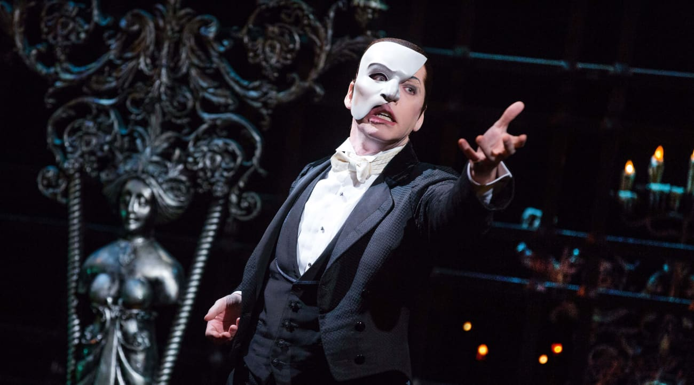
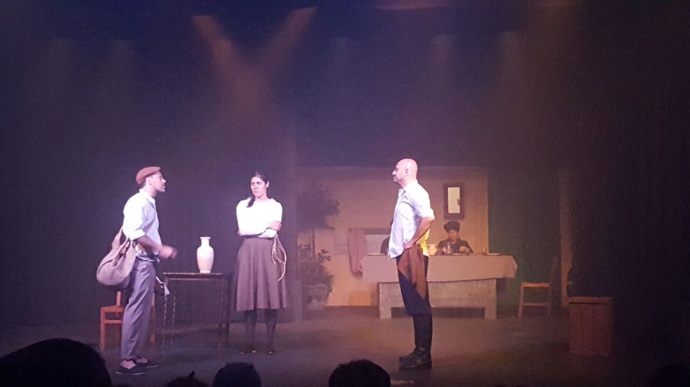

"El Fantasma de la Ópera" regresa triunfalmente a Broadway:
Tras una pausa forzada debido a la pandemia, el icónico musical "El Fantasma de la Ópera" ha vuelto a los escenarios de Broadway con renovada energía. Los espectadores están emocionados de volver a disfrutar de la magia de esta cautivadora historia y de las interpretaciones musicales inolvidables. ¡Una experiencia que no se pueden perder!
Talleres de actuación y dramaturgia abiertos al público:
Esta semana, varios teatros han organizado talleres abiertos al público, brindando la oportunidad de aprender de reconocidos profesionales del teatro. Estas sesiones interactivas ofrecen a los participantes la posibilidad de explorar técnicas de actuación y escritura dramática, así como de conectarse con otros apasionados del teatro.
